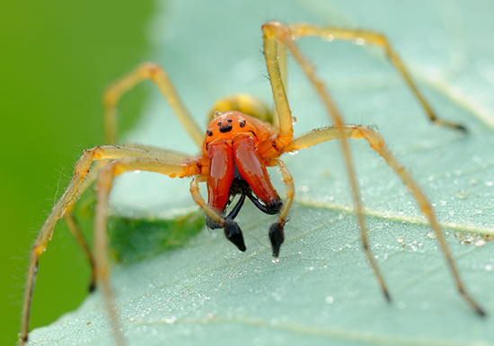
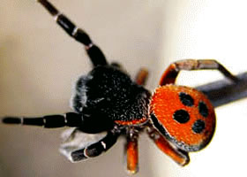

Ядовитый желтый паук сак, представитель хищных пауков
Желтый хейракантиум или сак – это типичный представитель хищных пауков, которые в качестве «охотничьего» оружия используют яд нейропаралитического действия. С учетом того что сам охотник небольшой (средний размер – 5–10 мм), в качестве жертвы он выбирает мелких насекомых – моль, тлю, гусениц, клещей. Интересно! За «вклад» в борьбу с сельскохозяйственными вредителями хейракантиум снискал репутацию энтомофага – полезного... Далее...
Полосатый скорпион
Полосатые скорпионы Centruroides vittatus – самые узнаваемые и наиболее распространённые из всех видов скорпионов, населяющих центральные районы Соединенных Штатов и северную часть Мексики. Их можно встретить практически повсюду: в прохладных расщелинах скал, под сухими листьями, упавшими деревьями и даже в жилых помещениях. Днем полосатые скорпионы прячутся в тени, а ночью выходят на поиски пищи. Свою добычу – пауков, многоножек,... Далее...
Крестовик Araneus praesignis

Похожий на пришельца из других миров, этот крестовик из семейства пауков-кругопрядов, обитающий в австралийском штате Квинсленд, действительно заслуживает того, чтобы присмотреться к нему внимательнее. Особенно интересен вид сзади: здесь красуется пара блестящих антрацитово-черных «глаз». На самом же деле, эти выразительные «глаза» — не что иное, как элемент камуфляжа. Они будто смотрят на подкравшегося сзади хищника,... Далее...
Черная вдова

Кого вы больше боитесь: пауков или змей? Если змей, то вот вам информация для размышления — паук черная вдова (лат. Latrodectus mactans), обитающий в Северной Америке, в 15 раз ядовитее гремучей змеи. Если после его укуса вовремя не обратиться за медицинской помощью, мучительная смерть наступает в течение недели, а то и нескольких часов при слабой иммунной системе. Вообще род черных вдов (лат. Latrodectus) богат на ядовитые таланты. К примеру, в... Далее...
Архидовые пауки
Своей наводящей страх внешностью, ядовитым укусом и почти до совершенства отточенными навыками охотника, архидовые (лат. Archaeidae) пауки полностью соответствуют своему названию – пауки-убийцы. Их необычный вид наглядно иллюстрирует мощь эволюции. Тело каждого паука состоит из двух частей – брюшка и головогруди, включающую также глаза, рот, челюсти и ноги. У большинства пауков головогрудь имеет округлую форму, у архидовых же она... Далее...
Бразильский странствующий паук
Самым ядовитым пауком в мире, по версии Книги рекордов Гиннеса, считается «Бразильский странствующий паук». Своё название этот паук получил за то, что не сидит на одном месте и не плетёт паутины, а активно перемещается в поисках пропитания. Другим крайне опасным пауком считается Чёрная вдова — которого можно встретить на Кавказе и в Крыму. Бразильский странствующий паук (Phoneutria) — быстрый, очень активный и самое главное... Далее...
Эрезус
Эрезус – (латинское название «Eresus niger Petagna»)это вид пауков, принадлежащих отряду Пауки и семейству Эрезиды. Внешний вид Поуки эрезус – небольшие существа, длина тела которых в среднем составляет 9 миллиметров. Самые крупные экземпляры вырастают до 16 миллиметров, но это большая редкость. Самцы и самки эрезус окрашены по-разному: брюшко самца имеет яркую красную или оранжевую окраску с крупными черными пятнами; брюшко самки имеет... Далее...
Черная вдова
«Черная вдова» — это нелестное прозвище самки паука каракурта. Каракурт (пуговичный паук) — один из опаснейших пауков южной части России и прикаспийских степей. В Европе более известен его «близкий родственник» — паук мальминьяте. Свое прозвище — «Черная вдова» — самка паука получила за то, что после брачного периода она съедает своего «жениха». Стремясь избежать такого печального конца, многие самцы приносят... Далее...
Тарантул
Тарантул — сборное название, относящееся к различным видам пауков, принадлежащих к семейству тарантуловых (латинское название Lycosida). Все пауки-тарантулы более или менее ядовиты и сходны по образу жизни. Признаки Общие признаки всех пауков-тарантулов заключаются в том, что трапеция, образуемая крупными средними и задними глазами, спереди немного уже, чем сзади, и что 3-й добавочный коготок на 3-х задних парах ног является не... Далее...
Странствующие пауки Бразильские рода Phoneutria
Бразильские странствующие пауки – наиболее опасные членистоногие в мире. Их яд считается самым сильным из всех ядов, которые вырабатывают в своем организме членистоногие и насекомые. Внешний вид Бразильские странствующие пауки – довольно крупные членистоногие. Длина их тела в среднем составляет 10 сантиметров. Голова и головогрудь имеют небольшие размеры, а вот брюшко напротив, очень велико. Длинные и толстые ноги покрыты... Далее...
Стеатода
Стеатода крупная (латинское название Steatoda grossa) – большой паук, обитающий в лесах, близкий родственник паука каракурта. Всего в семействе насчитывается 87 родов и около 2 250 видов. Отличительные признаки Стеатода крупная — черный (реже темно-коричневый) паук средних размеров (самки около 10-12 миллиметров, самцы – около 5-6 миллиметров). Брюшко небольшое, с характерными пятнами-«метками» — полукруг и три пятна. У самцов эти пятна... Далее...
Скорпион
Скорпионы (латинское название «Scorpionidea») — отряд класса паукообразных, типа членистоногих, или суставчатоногих. Принадлежащие к этому отряду животные — исключительно наземные формы, которые встречаются лишь в странах с весьма жарким климатом. Признаки Тело скорпионов состоит из небольшой головогруди, происшедшей слиянием нескольких сегментов и длинного брюшка, в котором различают два отдела: передний отдел, более широкий... Далее...
 Добро пожаловать на проект "Самые опасные животные мира" здесь вы прочитаете информацию о самом животном, сможете узнать о том, как нужно себя вести, чтобы не угодить в зубы или когти хищника, не получить смертельный удар или ядовитый укус.
Добро пожаловать на проект "Самые опасные животные мира" здесь вы прочитаете информацию о самом животном, сможете узнать о том, как нужно себя вести, чтобы не угодить в зубы или когти хищника, не получить смертельный удар или ядовитый укус.